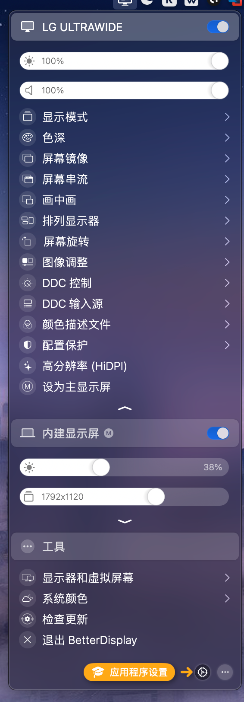

一些开源便利的Git项目
修改于: 2024-05-29- frida-wechat-sticker
地址: https://github.com/K265/frida-wechat-sticker/tree/main
22年的时候可用于Windows下微信表情包提取, 现在不知道
- amis
地址: https://github.com/baidu/amis
百度开源低代码框架, 前端
- healthchecks
cron 这种定时任务管理器, 是一个开源Django项目, 能在Crontab失效的时候通知
在运维中, 当你的Crontab中的任务数超过10个的时候， 你会发现这些任务管理起来非常困难。尤其是当这些Cron任务执行失败的时候
克隆:
git clone https://github.com/healthchecks/healthchecks.git
它通过一个回调接口判断你的Crontab任务有没有顺利执行。
比如说你有一个python脚本定时执行，healthchecks给定的回调URL是:
http://localhost:8000/ping/880cb4d
在配置Crontab脚本的时候，就需要这么写:
8 6 * * * python /home/user/test.py && curl -fsS -m 10 --retry 5 -o /dev/null http://localhost:8000/ping/880cb4d2
如果未按时调用回调接口，healthchecks将会通过邮件等通知方式告警。
- hyper
一个基于electron的终端工具. 跨平台.
- 官网: https://hyper.is
- github: https://github.com/vercel/hyper
- furo
- 见 furo
- it-tools
地址: https://github.com/CorentinTh/it-tools
一个开源工具库, 比如加密解密, 颜色选择等, 成品中文官网: https://www.ittools.top , 个人实测用docker跑的中文翻译有问题, 源码直接跑的没问题.
- localsend
地址: https://github.com/localsend/localsend
一个类AirDrop的文件局域网传输软件, 官网: https://localsend.org
- MoneyPrinter
地址: https://github.com/FujiwaraChoki/MoneyPrinter
自动生成短视频(YouTube), 适合国外用. 注意这只是个客户端软件, 需要自己申请模型API, 之类
- MoneyPrinterTurbo
地址: https://github.com/harry0703/MoneyPrinterTurbo
自动生成短视频, 适合国内用. 注意这只是个客户端软件, 需要自己申请模型API, 之类
成品地址: https://reccloud.cn
- marktext
地址: https://github.com/marktext/marktext
开源markdown编辑器.
- hashcat
地址: https://github.com/hashcat/hashcat
官网: https://hashcat.net/hashcat/
一个密码爆破工具
- ja-netfilter
gitee地址: https://gitee.com/ja-netfilter/ja-netfilter , github上被删库了. 作者主页: https://gitee.com/ja-netfilter
一个JB家产品激活工具. 支持激活码激活和激活服务器激活.
服务器激活可参考的教程: 【是可达鸭】一款JetBrains全家桶神器——ja-netfilter ,
激活码激活可参考教程: https://zhuanlan.zhihu.com/p/546191706 , 虽然是另一款产品的教程, 不过差别较小.
- EMBY
地址: https://github.com/MediaBrowser/Emby
一个媒体服务器, 介绍可看: https://zhuanlan.zhihu.com/p/629282288
简单来说, 如果你有一块硬盘, 里面存了很多电视剧电影动漫, 那你如何像腾讯视频一样快速查看播放呢? 总不能每次找文件夹吧.
EMBY可以开一个媒体服务器, 将资源放到这个媒体服务器, 会自动检测你的影视内容, 并跟实际的媒体服务信息同步. 这样就相当于搭建了一个本地的 腾讯视频? (仅类似).
Apple系列可以使用暂时还是免费得 VidHub (软件免费, 但貌似没开源, 据说后面可能会收费).
注解
分客户端跟服务端.
- pot-desktop
地址: https://github.com/pot-app/pot-desktop
开源跨平台翻译软件. 跟之前买的 Bob 有点像, 不过Bob只有MacOS
- obs-studio
用于直播和屏幕录制的免费开源软件
- xManager
地址: https://github.com/Team-xManager/xManager
感觉就是安卓的 Spotify 应用商店, 可以下载其 pj 版
- spicetify-cli
地址: https://github.com/spicetify/spicetify-cli
命令行工具，可以修改 Spotify 的样式
- revanced-youtube
- 地址: https://github.com/NoName-exe/revanced-extended
- revanced-patches
地址: https://github.com/revanced/revanced-patches
Patches for ReVanced
- Xiaomi-HyperOS-BootLoader-Bypass
地址: https://github.com/MlgmXyysd/Xiaomi-HyperOS-BootLoader-Bypass
小米13系列即之前的机器, 越过小米社区账号限制解bl锁, 不知现在是否可用.
- koishi
地址: https://github.com/koishijs/koishi.git
聊天机器人
阅读
- legado
开源阅读-安卓
地址: https://github.com/gedoor/legado
书源地址可以使用:
https://www.yckceo.com/yuedu/shuyuans/json/id/2.json
音乐
- lx-music-mobile
开源音乐整合音乐播放器 手机版
新版需要自己配置源. 因为腾讯律师函...
- lx-music-desktop
开源音乐整合音乐播放器 桌面版
地址: https://github.com/lyswhut/lx-music-desktop
一些问题链接:
- 歌曲无法试听与下载
- 六音源: https://www.sixyin.com/8498.html
- 六音源其他地址: www.sixyin.com , www.6yit.com, www.6yso.com
- MusicFree
免费开源音乐播放器
- MusicFreeDesktop
- 地址: https://github.com/maotoumao/MusicFreeDesktop
漫画软件
- Kotatsu
地址: https://github.com/KotatsuApp/Kotatsu
开源漫画软件, star: 2.9k, 截止目前(2024-05-07)有内置漫画源. 目前比较推荐的漫画软件
- mihon
地址: https://github.com/mihonapp/mihon
star: 6.9k, 无内置漫画源
- Cimoc
地址: https://github.com/Haleydu/Cimoc
star: 2.6k, 无内置漫画源
- tachiyomi
地址: https://gitee.com/mirrors/tachiyomi/tree/master/
github上因为版权已经被删了, 找到个gitee的
工具-Android
- gkd
安卓跳广告客户端. 新版因为众所周知的原因移除默认规则. 需要自己弄订阅规则
- GKD_subscription
gkd 对应规则, 第三方的, 从官方 fork .
地址: https://github.com/Adpro-Team/GKD_subscription/tree/main
- LiTiaotiao-Custom-Rules
地址: https://github.com/Snoopy1866/LiTiaotiao-Custom-Rules
断更的 李跳跳 自定义规则
- MaterialFiles
安卓用开源文件管理器
工具-Windows
- PowerToys
地址: https://github.com/microsoft/PowerToys
Windows 下实用工具集, star 105k
- CMWTAT_Digital_Edition
开源的 Window 数字激活工具
- TranslucentTB
Windows 透明任务栏
- notepad-plus-plus
notepad++
- NotepadNext
由于 notepad++ 开发者政治原因, 有了 NotepadNext
- TrafficMonitor
Windows 下网速、内存等监控
这是一个用于显示当前网速、CPU及内存利用率的桌面悬浮窗软件，并支持任务栏显示，支持更换皮肤。- downkyi
bilibili视频下载器, 仅Windows可用
- rcedit
用于编辑 EXE 信息, 比如版本/图标等. 由 Electron 开发
- 使用
- 更改图标: rcedit.exe "xxx.exe" --set-icon "xxx.ico"
工具-MacOS
- listen1_desktop
开源音乐播放器, 桌面版 https://github.com/listen1/listen1_desktop
实际核心是一个chrome拓展, 用electron包了一下
官网: https://listen1.github.io/listen1/
- frida
支持跨平台的hook, 比如侵入到一个dll内根据偏移获取内存信息
地址: https://github.com/frida/frida
Gitee地址: https://gitee.com/wenph/frida
- KeyboardShortcuts
Mac下三方库: https://github.com/sindresorhus/KeyboardShortcuts
支持便捷的快捷键配置, 但是不支持配置的快捷键执行默认行为
- latest
Mac端更新软件工具:
官网: https://github.com/mangerlahn/latest
软件旁边有个图标
- appStore 图标 表示从 AppStore 下载安装
- 啤酒 图标 表示从 HomeBrew 下载安装
- 小星星 图标 表示从 官网 下载安装
- BetterDisplay
地址: https://github.com/waydabber/BetterDisplay
屏幕更多可玩性
看提交历史, 开源开源着, 只有个readme了. 后面的是需要付费专业版.
目前下载的版本, 每次休眠中解锁, 亮度最大, 卸载之
- MonitorControl
地址: https://github.com/MonitorControl/MonitorControl
开源免费的屏幕设置工具
- Quantumult-X
地址: https://github.com/crossutility/Quantumult-X
不确定是否是 QX 源码...
- QuantumultX
地址: https://github.com/w37fhy/QuantumultX
并不是 QuantumultX 本身, 而是 配置脚本/内容/规则 集合
另发现一个文档教程项目 https://github.com/kjfx/QuantumultX
- openmtp
MacOS 上的开源安卓文件传输软件
- Kap
MacOS录屏工具.
安装
brew install --cask kap
一起搜到的类似的还有:
解决鼠标移动
- Mos
让Mac上鼠标滚动与习惯一致. 解决mac鼠标移动问题, 支持平滑滚动与白名单; 缺点是很久没维护, 容易崩溃
打算有时间找下原因
- Scroll-Reverser
解决mac鼠标移动问题; 缺点是不能平滑滚动
- mac-mouse-fix
解决mac鼠标移动问题; 缺点是平滑滚动不能设置白名单
支持直接 brew 安装: brew install mac-mouse-fix
工具-Linux
- sysstat
地址: https://github.com/sysstat/sysstat
Linux系统监控工具
工具-通用
- frp
地址: https://github.com/fatedier/frp
内网穿透工具
- rst2pdf
将rst文件转换为pdf, 有命令行工具和python包, 但是对中文的支持不好
- webtorrent
开源类似迅雷下载器. 但是感觉还是冷门资源没迅雷好用
- omnibus-gitlab
omnibu架构配置(一种打包部署 GitLab 软件及其所有相关组件的方式)源码. 什么是omnibus? 参考: omnibus-gitlab架构学习https://www.cnblogs.com/rongfengliang/p/11108891.html
- GitLab omnibus 包包含了 GitLab 应用程序以及运行它所需的所有依赖组件,如 Nginx、PostgreSQL、Redis 等。
- 这种打包部署方式可以简化 GitLab 的安装和升级过程,用户只需下载和运行一个单独的 omnibus 安装包即可。
- omnibus 包会自动安装、配置和管理 GitLab 所需的所有服务,无需用户手动设置各个组件。
- 这种方式可以确保 GitLab 及其依赖组件之间的版本兼容性和稳定性,有利于简化运维管理。
- GitLab omnibus 提供了命令行工具 gitlab-ctl,用于管理 GitLab 的各种操作,如启动、停止、备份等。
- Thanks-Mirror
各种包管理器配置...
- chsrc
全平台命令行换源工具.
- nginx-proxy-manager
nginx管理器
部署yaml参考
version: '3' services: app: image: 'jc21/nginx-proxy-manager:latest' restart: unless-stopped ports: - '80:80' - '81:81' - '443:443' volumes: - ./data:/data - ./letsencrypt:/etc/letsencrypt
默认账户:
账号: admin@example.com 密码: changeme
地址: https://github.com/NginxProxyManager/nginx-proxy-manager
有个汉化版: https://github.com/xiaoxinpro/nginx-proxy-manager-zh , docker镜像: docker pull chishin/nginx-proxy-manager-zh
汉化版可参考配置
version: '3' services: app: image: 'chishin/nginx-proxy-manager-zh:release' restart: always ports: - '80:80' - '81:81' - '443:443' volumes: - ./data:/data - ./letsencrypt:/etc/letsencrypt
- 关于DNSPod创建证书失败
历史问题
此问题在2.9.19版本开始就已经存在，原因是zope引起的，由于ARM架构一直安装失败所以无法打包到镜像中，建议使用如下方法修复此问题： 首先确保nginx-proxy-manager-zh的Docker容器已经正常运行，使用docker-compose ps查看容器名，这里假设容器名为npm-zh。 进入容器：（注意替换下文中的容器名）:
docker exec -it npm-zh bash
执行安装zope命令:
python3 -m pip install --upgrade pip pip install certbot-dns-dnspod pip install zope
等待安装完成，退出容器:
exit
最后刷新浏览器，再次使用DNSPod创建证书即可。
- mihomo
基于原Clash内核的Meta内核, 说明参考: https://clashios.com/clash-meta-clash-core/
Clash Meta 是基于原 Clash 核心的重写项目，支持原 Clash Premium 核心的大部分功能。由于原 Clash Premium 核心已经删库停更，现在还在继续更新的 Clash 客户端，几乎都采用 Clash Meta 内核，可以说 Clash Meta 挑起「大梁」，是原 Clash 核心的继任者。
开发者自称 Clash Meta 为「虚空终端」，戏称为原神相关的项目，Github 页面更是命名为 Mihomo，可以说是幽默感拉满了。
- Adguard第三方规则
- screenity
录屏并操作的浏览器插件
chrome商店地址: https://chromewebstore.google.com/detail/screenity-屏幕录像和标注工具/kbbdabhdfibnancpjfhlkhafgdilcnji
- tabby
貌似暂可用为xshell替代, star: 59k
- miniblink49
类似 electron, 不过是轻量版(暂时只支持windows系统)
- aipan-netdisk-search
爱盼. 网盘聚合搜索.
电影搜索是网盘聚合, 支持在线播放.
音乐搜索不用跳转网盘可以直接下.
音乐解码
- kuguo-kgm-decoder
酷狗音乐kgm格式解码为MP3, 源码为Rust
- ncmdump
网易云ncm格式解码为MP3/FLAC
抓包
- network_proxy_flutter
全平台抓包工具
浏览器拓展
- uBlock
地址: <https://github.com/gorhill/uBlock>
浏览器隐私拦截拓展, star 43.4k
- Bonjourr
浏览器起始标签页
NAS
- alist
官方文档: https://alist.nn.ci/zh/guide/drivers/common.html
文件云盘存储项目
地址: https://github.com/alist-org/alist/tree/main
- virtual-dsm
地址: https://github.com/vdsm/virtual-dsm
黑群晖docker
- MoviePilot
- music-tag-web
地址: https://github.com/xhongc/music-tag-web
音乐标签编辑器，可编辑本地音乐文件的元数据（Editable local music file metadata.）
- sun-panel
一个服务器、NAS导航面板、Homepage、浏览器首页。
- xiaoya-alist
安装版小雅部署
- docker-xiaoya
docker版小雅部署
家庭控制
- CasaOS
开源私有云系统
- home-assistant
跟 CasaOS 类似, python写的
地址: https://github.com/home-assistant/core
- integration
地址: https://github.com/hacs/integration
home-assistant 的商店
- operating-system
- 地址: https://github.com/home-assistant/operating-system
自动化测试
- Airtest
地址: https://github.com/AirtestProject/Airtest
网易开发, 基于Python, 官网: http://airtest.netease.com/
还有关联的:
AI大模型
- MaxKB
地址: https://gitee.com/fit2cloud-feizhiyun/MaxKB
知识库问答模型, 需要自己喂文件.
仓库文档: https://github.com/1Panel-dev/MaxKB/wiki/1-安装部署
docker使用
docker run -d --name=maxkb -p 8080:8080 -v ~/.maxkb:/var/lib/postgresql/data 1panel/maxkb # 用户名: admin # 密码: MaxKB@123..
注意这只是一个客户端, 模型需要自己配(比如模型的API)
实例-配置Kimi模型.
前三个随便选, Kimi的域名为:
https://api.moonshot.cn/v1
API-Token需要自行去Kimi官网控制台配置, 地址: https://platform.moonshot.cn/console/api-keys
如果要直接使用, 应用那点演示就行
- ml-stable-diffusion
地址: https://github.com/apple/ml-stable-diffusion
Stable Diffusion with Core ML on Apple Silicon
- open-webui
大模型前端
字体
- noto-cjk
字体: Noto CJK fonts
- free-font
免费字体库
docker相关
- docker-registry-mirrors
镜像服务器整理
- public-image-mirror
docker自建镜像服务器
- crproxy
通用镜像代理
- LightMirrors
配置docker, pip, npm等镜像源. 暂未发布到dockerhub, 所以如果用docker镜像, 需要自己编
- registry-mirror
仅docker镜像
地址: https://github.com/brighill/registry-mirror
其他的还有:
- Docker-OSX
docker运行MacOS
磁力链
工具
- qBittorrent
qBittorrent原版, 官网: https://www.qbittorrent.org/
- qBittorrent-Enhanced-Edition
基于 qBittorrent 的增强版
MacOS安装
brew install c0re100-qbittorrent
- 第三方qBittorrent-Enhanced-Edition的docker版本
docker命令行设置：
创建qbittorrent容器
docker create \ --name=qbittorrentee \ -e WEBUIPORT=8080 \ -e PUID=1026 \ -e PGID=100 \ -e TZ=Asia/Shanghai \ -p 6881:6881 \ -p 6881:6881/udp \ -p 8080:8080 \ -v /配置文件位置:/config \ -v /下载位置:/downloads \ --restart unless-stopped \ superng6/qbittorrentee:latest
docker-compose
version: "2" services: qbittorrentee: image: superng6/qbittorrentee container_name: qbittorrentee environment: - PUID=1026 - PGID=100 - TZ=Asia/Shanghai volumes: - /path/to/appdata/config:/config - /path/to/downloads:/downloads ports: - 6881:6881 - 6881:6881/udp - 8080:8080 restart: unless-stopped
变量:
参数 说明 --name=qbittorrentee 容器名 -p 8080:8080 web访问端口 IP:8080;(默认用户名:admin;默认密码:adminadmin); 此端口需与容器端口和环境变量保持一致，否则无法访问 -p 6881:6881 BT下载监听端口 -p 6881:6881/udp BT下载DHT监听端口 -v /配置文件位置:/config qBittorrent配置文件位置 -v /下载位置:/downloads qBittorrent下载位置 -e WEBUIPORT=8080 web访问端口环境变量 -e TZ=Asia/Shanghai 系统时区设置,默认为Asia/Shanghai 群晖docker设置：
卷
参数 说明 本地文件夹1:/downloads qBittorrent下载位置 本地文件夹2:/config qBittorrent配置文件位置 端口
参数 说明 本地端口1:6881 BT下载监听端口 本地端口2:6881/udp BT下载DHT监听端口 本地端口3:8080 web访问端口 IP:8080;(默认用户名:admin;默认密码:adminadmin); 此端口需与容器端口和环境变量保持一致，否则无法访问 环境变量：
参数 说明 TZ=Asia/Shanghai 系统时区设置,默认为Asia/Shanghai WEBUIPORT=8080 web访问端口环境变量 地址: https://github.com/SuperNG6/Docker-qBittorrent-Enhanced-Edition , star多一点, 算是国内增强版?
默认账密:
admin adminadmin # 旧版本初始账密：admin/adminadmin， # 4.6.1.0后的所有版本，qBittorrent弃用adminadmin默认密码，采用随机密码； # 套件版需要通过SSH或SFTP工具到安装目录的日志文件查看， # Docker版则可通过第一次启动时的后台日志中显示。
原版官方: https://github.com/linuxserver/docker-qbittorrent
其他第三方
- qBittorrentDarktheme
黑色主题
设置方法
主要针对: WebUI Theme (Server) 设置: qbittorrent dracula theme (webui)
Clone the repository:
cd /config/themes git clone https://github.com/dracula/qbittorrent.git ./dark chmod -R 777 dark
然后配置路径为 /config/themes/dark/webui/
磁力链tracker地址
前端库
- react-select
较美化的select实现
系统
iStoreOS
- istoreos
地址: https://github.com/istoreos/istoreos
个人云
- iStoreOS下插件-PassWall
地址: https://github.com/AUK9527/Are-u-ok
不止这个插件, 很多插件都有
OpenWrt官方插件: https://github.com/xiaorouji/openwrt-passwall
- OpenWrt-OpenClash
地址: https://github.com/vernesong/OpenClash
给 iStoreOS 用的 clash
开发相关
- sass
前端新 CSS 标准解析库